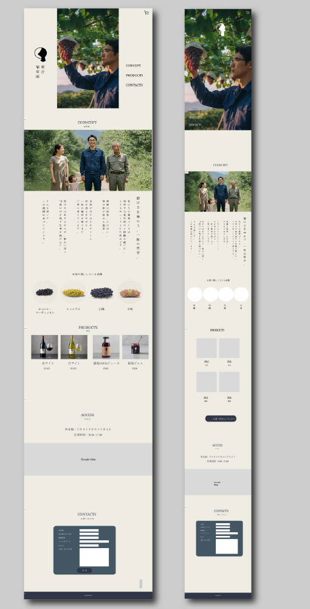

webサイト(架空ワーク)
ぶどう農園HP(架空)
制作目的
実在しないぶどう農園「雨音葡萄園」を想定し、世界観づくり・ ブランディング・情報設計・ビジュアル表現を一貫して行うこと
想定クライアント・サービス内容
- 地方にある小規模農園
- 観光客向けにブランド価値を高めたい生産者
- 大量生産ではなく「背景・物語」を大切にする事業者
ターゲット
30～50代の食やライフスタイルにこだわりがある男女
HPの目的
世界観に共感させ、SHOPへ自然に導くこと
デザイン・表現方針
- 配色
- 低彩度・自然由来の色味（生成り、墨色など）
- タイポグラフィ
- 明朝系・セリフ体を基調に、静かな緊張感を演出
制作時間
- クライアント・ターゲットの設定
- 1日
- デザイン
- 1週間
- コーディング
- 1週間
使用ツール
figma/illustrator/Photoshop/html/css
反省点・改善点
一からデザインし、コーディングした初めてのHPです。
世界観の表現に重きを置いており、SHOPへの誘導が十分でなかったと感じます。
また、CSSアニメーションでできること・できないことの理解が十分でなく、当初予定していた
動的表現が実現できないという自体が発生しました。
このHPの制作をきっかけにJavaScriptを勉強し、より表現の幅を増やしたいと考えるようになりました。